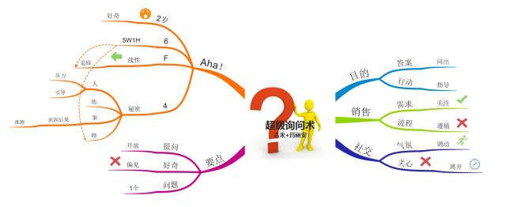

超级询问术 2020年3月13日 关键技巧 提问越简单越直接越好，同一时间内只关注一个问题 确保你的问题始终围绕一个关键性主题展开 像孩子一样去思考，然后提问 以答案的形式提问 对于不熟悉的主题，通过5W2H来提问 5W: where, when, who, what, why 2H: how ,how much 多询问那些可以获得叙述性回答的问题，而不是对方只能简单回答是或否的问题 恰当的节点上，懂得询问-还有其他的吗？ 思维导图  相关文章 问题本质 写作是最好的自我投资 曹老板分享的技术成长 记忆方法总结 如何阅读一本书 没有标签